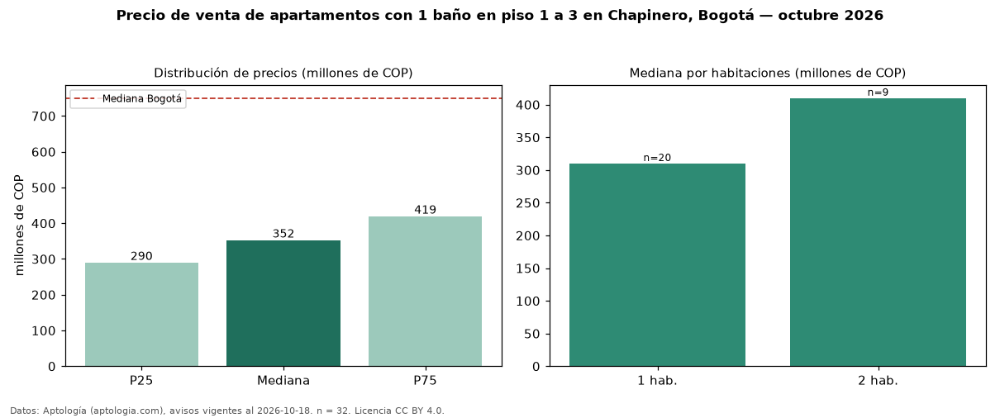

Precio de venta de apartamentos con 1 baño en piso 1 a 3 en Chapinero, Bogotá — octubre 2026
Con 32 avisos vigentes, el precio mediano de apartamentos con 1 baño en piso 1 a 3 en venta en Chapinero, Bogotá es COP 352 millones. Frente a la mediana de los apartamentos con 1 baño en venta de Chapinero (COP 330 millones, n = 130), queda 7 % por encima; este segmento reúne el 25 % de esos avisos. Por metro cuadrado, la mediana es COP 7,60 millones/m² (n = 32), 16 % por debajo de los apartamentos con 1 baño en venta de Chapinero (COP 9,00 millones/m²). El área mediana anunciada es 47 m². El segmento con más oferta es el de 1 habitación (20 avisos, mediana COP 310 millones); pasar de 1 habitación a 2 habitaciones cambia la mediana +32 %. La administración mediana declarada es COP 417.000 al mes (n = 26). El estrato más frecuente es 4 (53 % de los avisos con estrato). La mediana de todos los apartamentos en venta de Bogotá es COP 750 millones (−53 % de diferencia). Datos: Aptología (aptologia.com), CC BY 4.0 — https://www.aptologia.com/venta/bogota/chapinero. Archivos: PDF, CSV con las cifras y gráfica PNG.

| Avisos únicos | 32 |
|---|---|
| Percentil 25 | COP 289.750.000 |
| Mediana | COP 352.500.000 |
| Percentil 75 | COP 419.250.000 |
| Mediana por m² | COP 7.598.404 |
Fuente: avisos vigentes de portales inmobiliarios recopilados por Aptología, deduplicados (mínimo 30 avisos únicos por celda). Precios pedidos, no cerrados. Fecha: 2026-10-18.